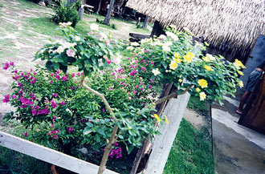
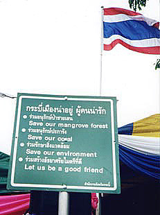
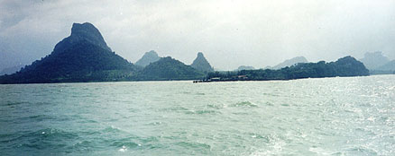
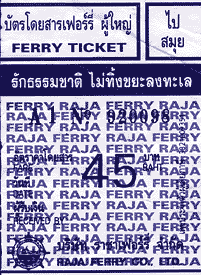
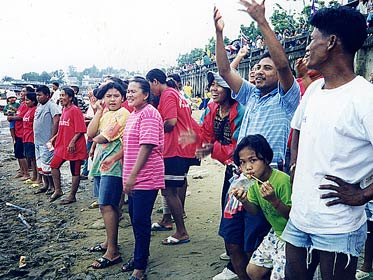
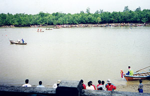
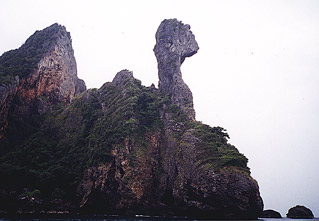
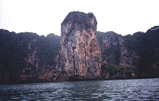

Sent: 22 Nov 99 4:00 GMT
web version, with
|

|
| Prior Trav-E-Log: Thai 1 | Thailand is Flowers, and Beach, and Straw Huts... |
(Note:) This is the 9th in a series of Trav-E-Logs sent while traveling in S.E.Asia between Oct 16, 1999 and Jan 22, 2000.Hi Folks,
After breakfast in Hat Yai, Thailand, the Tourist Information Office was only a short walk, to plan onward transportation. They recommend only the west coast for beaches and snorkeling, because monsoon now on East coast. I show them the Lonely Planet guide that says East coast is preferred at this time of year, and they say the book is wrong. I decide to try them both, and find out for sure.
Wanting to avoid an arrival after 6 PM at night (in this case after midnight), requires me to spend one more night in Hat Yai, so I check back into the same dorm room, wash my clothes, and head out for lunch. A spinach dish, green bean dish, yellow crunchy vegetable dish, and a broccoli one. Only one is spicy, and all are delicious with the ubiquitous Thai rice. A Pepsi brings the bill to $1. An observation is that people here eat with fork in right hand, spoon in left hand, quite contrary to Indonesia and Malaysia, where custom dictates the left hand never be brought near food. I look forward to meal-time, as the food has been most enjoyable.
Now
it's time to see some temples. Several of us use local transportation to
the third largest lying Buddha image in Thailand. I’m not impressed, partially
because the temple is still under construction and parts of it are covered
in dust. We can imagine where some of the carvings, setting around the
temple, will be placed as the temple nears completion. We take a few pictures,
and head back to the dorm. Time to read more about the east and west coast
islands.

Got an early start for Ko Samui on a big bus, after taking local transportation
to the station. One ticket includes bus + ferry + bus transportation to
destination. It’s windy, but the boat trip is uneventful. Talk to an Aussie
that has lived here many years, and is just returning from the monthly
required round trip out of country, to get visa re-newed. He is quite helpful
with climate info, telling me this is the wrong time and place for snorkeling.
He recommends lodging for the night, and also explains the best way to
the west coast. Between showers, I try some body-surfing, walk around town,
and play the fiddle. Then it's time to check out of the straw hut, and
make way back to the
ferry side of the island. The ferry is a small boat, so I understand why
the trip is sometimes canceled in rough weather. The ticket seller assumes
all passengers want the upper deck, complete with mattress for the night-time
crossing. The boat is less than half full. My worries about rough weather
in such a small boat are not tested, as the winds die down.
On to Krabi, the jumping off place for the Ko Phi Phi National Park. People tell me a big Hollywood movie has just been made here, and that the place will be famous overnight. As I arrive in town, I see boat races and picnics -- it's obviously some sort of holiday. Great time to take pictures of the people. Can’t find information about places to snorkel, so I sign up for a "4 island snorkeling trip" for the next morning.
On a scale of one to ten, I put the tour at a three. The boat pulls up to an island, tosses the anchor out onto the coral, and says we leave in two hours. No provisions for changing into bathing suit, so into the bushes I go, being very careful where I step. (People normally go into the bushes for something else.) Of the 13 on the tour, I’m the first in the water, and can’t find much alive. Shortly before we leave, a huge school of large (~two pound) colorful fish swim by. Much of the coral is damaged, about a hundred yards off-shore. This experience does not compare to the earlier Bali trip. The next several stops are not much better. At one of the places we swim among colorful white and yellow stripped fish. The tour passes by many limestone formations with unusual shapes. Camel Rock is a natural. The last place has shallow caves on the island, which are fun to explore, but masses of tourists are everywhere you look.
Accommodations on this peninsula, accessible only by boat, vary from 100 baht to 25,000 baht per night, and attempts are made to keep riffraff (such as us) away from the folks that pay 25,000 baht, with guards and gated villas. Lots of monkeys on the paths by the caves; they think every plastic bag contains food. They leave me alone, as I have no bags with me, but that is not the case with many around me. These monkeys are rather aggressive.
In
general, I find the tourist places to be much too touristic, so decide
to remain in the town of Krabi. I extend my stay here for the holiday on
the 22nd -- the last full moon of the Thai year, and it appears to be a
rather festive occasion. But now it’s time to rent a bicycle, and ride
into the countryside with camera, in an attempt to capture more sights
of Thailand.